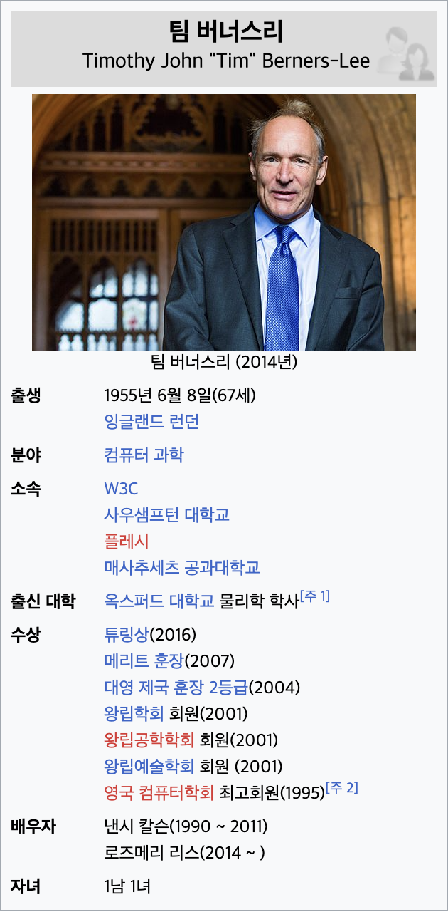

팀 버너스리
팀 버너스리 경(영어: Sir Tim Berners-Lee, OM, KBE, FRS, 1955년 6월 8일 ~ )은 영국의 컴퓨터 과학자이다. 1989년 월드 와이드 웹의 하이퍼텍스트 시스템을 고안하여 개발했다. 인터넷의 기반을 닦은 여러 공로로 웹의 아버지라고 불리는 인물 중 하나이다. URL, HTTP, HTML 최초 설계와 구현도 CERN 시절에 동료였던 로베르 카이오(Robert Cailliau) 등과 함께 그가 주도한 것이다. 차세대 웹 기술인 시맨틱 웹 기술의 표준화에 힘쏟고 있다.
생애
버너스리는 잉글랜드 런던에서 태어났으며,[1] 부모는 메리 리 우즈(Mary Lee Woods)와 콘웨이 버너스리(Conway Berners-Lee)이다. 1990년에 낸시 칼슨(Nancy Carlson)과 결혼하였으나 2011년 이혼하였다. 2014년, 버너스리와 로즈메리 리스(Rosemary Leith)가 런던 세인트 제임스 궁전에서 결혼하였다.[2]
약력
- CERN에서 WWW 개념의 기초가 된 인콰이어(Enquire)를 개발.
- 1989년 글로벌 하이퍼텍스트 프로젝트를 제안.
- 1990년 최초의 하이퍼텍스트 브라우저와 편집기를 개발.
저서
- 당신이 꿈꾸는 인터넷 세상 월드와이드웹(Weaving the web), ISBN 89-475-2329-1
- 정보 관리: 한가지 제안(Tim Berners-Lee, CERN)
